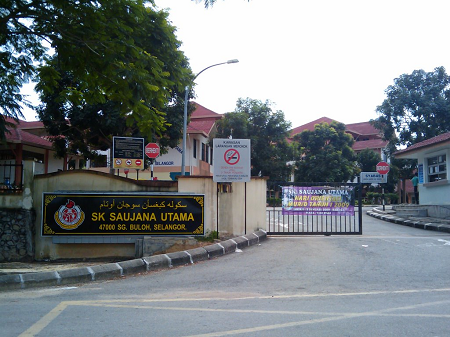
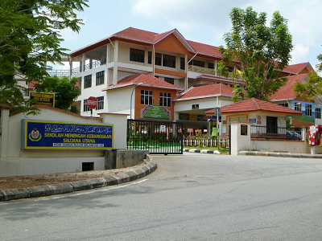

| EDUCATION | RESULT | EXPERIENCE | - Tadika Bintang Jelita | - None | - Not my favourite kindergaten, the teaches there were all stricted hence it is my least favourite place to learn | - Tadika Cekal Jaya | - None | - When, i was 6 years old i transfer to a new kindergaten. So far it was my favourite school rather than the previous one | - SK Saujana Utama | - UPSR (3As 2Bs) | - The experience was great but it does not considered as the best ones, so far it is good since my father also a teacher teaching there. | - SMK Saujana Utama | - None (i moved to a new school when i was 15) | - My most favourite school i have experienced in my life. Most of my friends are from the same primary school and i even got lucky when i got place in the same class as my best friend. Well, the happiness does not last long, since i need to transfer to a new school due my family is moving to a new house that was 40 minutes away. | - SMK Seri Tanjung | - PT3 (5As 2Bs 1Cs), SPM (6As, 1Bs, 2Cs, 1Ds) | - I tried to fit in when i first enter the school but it took almost a year for me to make friends. It's a whole new experience because the school is in the rural area and my old ones is located in town. When i was in the upper form, then i started to make friends. A bonus for this experience, overall all of the teachers are great! | - Universiti Teknologi Mara Cawangan Rembau | - By far, its great and have a huge improvement compare in the school days | - Easy to fit in with everyone when most of us are not recognizing each other and it is easy to get along with. Not a great experience, due to covid i can't make any memorable memories and stuck at home until my last semester. Also the stress that all of us gain is unbearable but thanks to the lecturer they do ease the burden. |
|---|---|---|

